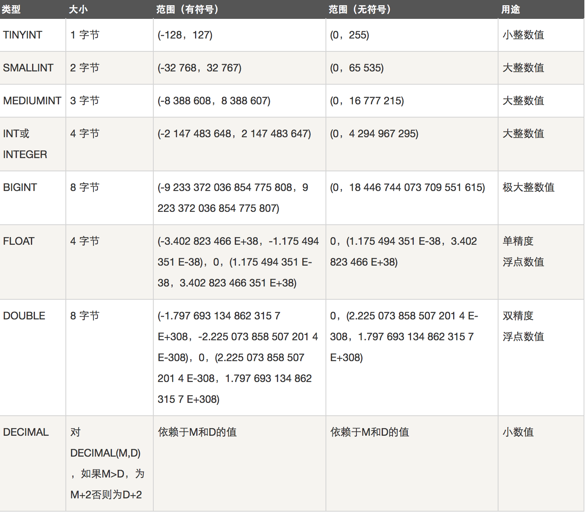
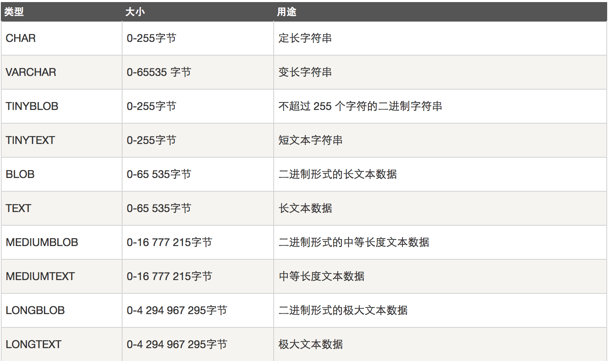

数据库
数据库的简介
数据库
数据库（database，DB）是指长期存储在计算机内的，有组织，可共享的数据的集合。数据库中的数据按一定的数学模型组织、描述和存储，具有较小的冗余，较高的数据独立性和易扩展性，并可为各种用户共享。
数据库管理系统软件
数据库管理系统(Database Management System)是一种操纵和管理数据库的大型软件，用于建立、使用和维护数据库，简称DBMS。它对数据库进行统一的管理和控制，以保证数据库的安全性和完整性。用户通过DBMS访问数据库中的数据，数据库管理员也通过dbms进行数据库的维护工作。它可使多个应用程序和用户用不同的方法在同时或不同时刻去建立，修改和询问数据库。大部分DBMS提供数据定义语言DDL（Data Definition Language）和数据操作语言DML（Data Manipulation Language），供用户定义数据库的模式结构与权限约束，实现对数据的追加、删除等操作。
数据库管理系统是数据库系统的核心，是管理数据库的软件。数据库管理系统就是实现把用户意义下抽象的逻辑数据处理，转换成为计算机中具体的物理数据处理的软件。有了数据库管理系统，用户就可以在抽象意义下处理数据，而不必顾及这些数据在计算机中的布局和物理位置。
常见的数据库管理软件：甲骨文的oracle,IBM的db2，sql server, Access,Mysql(开源，免费，跨平台).
数据库系统
数据库系统DBS（Data Base System，简称DBS）通常由软件、数据库和数据管理员组成。其软件主要包括操作系统、各种宿主语言、实用程序以及数据库管理系统。数据库由数据库管理系统统一管理，数据的插入、修改和检索均要通过数据库管理系统进行。数据管理员负责创建、监控和维护整个数据库，使数据能被任何有权使用的人有效使用。
mysql
mysql的管理
安装
mac：
https://www.jianshu.com/p/07a9826898c0
linux:
1 | --yum -y install mariadb mariadb-server |
win:
1 | --http://dev.mysql.com/downloads/mysql/ |
启动
1 | --service mysqld start #开启 |
查看
1 | -- ps aux |grep mysqld #查看进程 |
设置密码
1 | -- mysqladmin -uroot password '123' #设置初始密码，初始密码为空因此-p选项没有用 |
登录
1 | -- mysql #本地登录，默认用户root，空密码，用户为root@127.0.0.1 |
mysql的常用命令
1 | -- |
忘记密码怎么办？
方法1：启动mysql时，跳过授权表
1 | [root@controller ~]# service mysqld stop |
方法2(删库):
1 | 删除与权限相关的库mysql，所有的授权信息都丢失，主要用于测试数据库或者刚刚建库不久没有授权数据的情况（从删库到跑路） |
sql及其规范
sql是Structured Query Language(结构化查询语言)的缩写。SQL是专为数据库而建立的操作命令集，是一种功能齐全的数据库语言。
在使用它时，只需要发出“做什么”的命令，“怎么做”是不用使用者考虑的。SQL功能强大、简单易学、使用方便，已经成为了数据库操作的基础，并且现在几乎所有的数据库均支持sql。
<1> 在数据库系统中，SQL语句不区分大小写(建议用大写) 。但字符串常量区分大小写。建议命令大写，表名库名小写；
<2> SQL语句可单行或多行书写，以“;”结尾。关键词不能跨多行或简写。
<3> 用空格和缩进来提高语句的可读性。子句通常位于独立行，便于编辑，提高可读性。
1 | SELECT * FROM tb_table |
<4> 注释：单行注释：–
多行注释：/*……*/
<5>sql语句可以折行操作
<6> DDL,DML和DCL
1 | -- --SQL中 DML、DDL、DCL区别 . |
数据库操作(DDL)
1 | -- 1.创建数据库（在磁盘上创建一个对应的文件夹） |
mysql数据类型
MySQL支持多种类型，大致可以分为三类：数值、日期/时间和字符串(字符)类型。
1 | BIT 位类型 |
数值类型
下面的表显示了需要的每个整数类型的存储和范围。

1 | float(4,2) /*共4位，小数点后2位，99.99*/ |
日期和时间类型
表示时间值的日期和时间类型为DATETIME、DATE、TIMESTAMP、TIME和YEAR。
每个时间类型有一个有效值范围和一个”零”值，当指定不合法的MySQL不能表示的值时使用”零”值。

字符串类型
字符串类型指CHAR、VARCHAR、BINARY、VARBINARY、BLOB、TEXT、ENUM和SET。该节描述了这些类型如何工作以及如何在查询中使用这些类型。

1 | char(10) /*定长字符串，10字节*/ |
CHAR和VARCHAR类型类似，但它们保存和检索的方式不同。它们的最大长度和是否尾部空格被保留等方面也不同。在存储或检索过程中不进行大小写转换。
BINARY和VARBINARY类类似于CHAR和VARCHAR，不同的是它们包含二进制字符串而不要非二进制字符串。也就是说，它们包含字节字符串而不是字符字符串。
BLOB是一个二进制大对象，可以容纳可变数量的数据。有4种BLOB类型：TINYBLOB、BLOB、MEDIUMBLOB和LONGBLOB。它们只是可容纳值的最大长度不同。
有4种TEXT类型：TINYTEXT、TEXT、MEDIUMTEXT和LONGTEXT。这些对应4种BLOB类型，有相同的最大长度和存储需求。
数据表操作
基础操作
1 | -- 1.创建表（类似于一个excel表） |
创建文章表
1 |
完整性约束条件之主键约束
单字段主键
主键字段特点：非空且唯一
1 | create table users( |
多字段联合主键
1 | create table users2( |
<1> 一张表只能有一个主键
<2> 主键类型不一定非是整型
表纪录操作
表纪录之增，删，改
1 | -- 1.增加一条记录insert |
思考：
<1> 存储时间用varchar可不可以呢？它与date数据类型又有什么区别呢？（只用来显示时，可以用varchar，如果要计算用date）
<2> 表中数据三条，id分别为1，2，3，突然插入一个id＝7，那么下次作为主键的字增长的id会从几开始增长呢？(从7开始)
表纪录之查(单表查询)
1 | -- 查询表达式 |
外键约束
创建外键
外键一定要和关联主键的数据类型保持一致
1 | --- 每一个班主任会对应多个学生 , 而每个学生只能对应一个班主任 |
INNODB支持的ON语句
1 | --外键约束对子表的含义: 如果在父表中找不到候选键,则不允许在子表上进行insert/update |
多表查询
准备表
1 | -- 准备两张表 |
多表查询之连接查询
1.笛卡尔积查询
1 | mysql> SELECT * FROM employee,department; |
2.内连接
1 | -- 查询两张表中都有的关联数据,相当于利用条件从笛卡尔积结果中筛选出了正确的结果。 |
3.外连接
1 | --（1）左外连接：在内连接的基础上增加左边有右边没有的结果 |
多表查询之复合条件连接查询
1 | -- 查询员工年龄大于等于25岁的部门 |
多表查询之子查询
1 | -- 子查询是将一个查询语句嵌套在另一个查询语句中。 |
补充：any/some/all
1 | 【4】any/some/all |
MySQL 索引
MySQL索引的建立对于MySQL的高效运行是很重要的，索引可以大大提高MySQL的检索速度。
打个比方，如果合理的设计且使用索引的MySQL是一辆兰博基尼的话，那么没有设计和使用索引的MySQL就是一个人力三轮车。
索引分单列索引和组合索引。单列索引，即一个索引只包含单个列，一个表可以有多个单列索引，但这不是组合索引。组合索引，即一个索引包含多个列。
创建索引时，你需要确保该索引是应用在 SQL 查询语句的条件(一般作为 WHERE 子句的条件)。
实际上，索引也是一张表，该表保存了主键与索引字段，并指向实体表的记录。
上面都在说使用索引的好处，但过多的使用索引将会造成滥用。因此索引也会有它的缺点：虽然索引大大提高了查询速度，同时却会降低更新表的速度，如对表进行INSERT、UPDATE和DELETE。因为更新表时，MySQL不仅要保存数据，还要保存一下索引文件。
建立索引会占用磁盘空间的索引文件。
普通索引
创建索引
这是最基本的索引，它没有任何限制。它有以下几种创建方式：
1 | CREATE INDEX indexName ON mytable(username(length)); |
如果是CHAR，VARCHAR类型，length可以小于字段实际长度；如果是BLOB和TEXT类型，必须指定 length。
修改表结构(添加索引)
1 | ALTER table tableName ADD INDEX indexName(columnName) |
创建表的时候直接指定
1 | CREATE TABLE mytable( |
删除索引的语法
1 | DROP INDEX [indexName] ON mytable; |
唯一索引
它与前面的普通索引类似，不同的就是：索引列的值必须唯一，但允许有空值。如果是组合索引，则列值的组合必须唯一。它有以下几种创建方式：
创建索引
1 | CREATE UNIQUE INDEX indexName ON mytable(username(length)) |
修改表结构
1 | ALTER table mytable ADD UNIQUE [indexName] (username(length)) |
创建表的时候直接指定
1 | CREATE TABLE mytable( |
其他索引
全文索引
1 | create table emp( |
####多列索引
1 | create table emp( |
使用ALTER 命令添加和删除索引
有四种方式来添加数据表的索引：
- ALTER TABLE tbl_name ADD PRIMARY KEY (column_list):
该语句添加一个主键，这意味着索引值必须是唯一的，且不能为NULL。
ALTER TABLE tbl_name ADD UNIQUE index_name (column_list): 这条语句创建索引的值必须是唯一的（除了NULL外，NULL可能会出现多次）。
ALTER TABLE tbl_name ADD INDEX index_name (column_list): 添加普通索引，索引值可出现多次。
ALTER TABLE tbl_name ADD FULLTEXT index_name (column_list):该语句指定了索引为 FULLTEXT ，用于全文索引。
以下实例为在表中添加索引。
1 | mysql> ALTER TABLE testalter_tbl ADD INDEX (c); |
你还可以在 ALTER 命令中使用 DROP 子句来删除索引。尝试以下实例删除索引:
1 | mysql> ALTER TABLE testalter_tbl DROP INDEX c; |
使用 ALTER 命令添加和删除主键
主键只能作用于一个列上，添加主键索引时，你需要确保该主键默认不为空（NOT NULL）。实例如下：
1 | mysql> ALTER TABLE testalter_tbl MODIFY i INT NOT NULL; |
你也可以使用 ALTER 命令删除主键：
1 | mysql> ALTER TABLE testalter_tbl DROP PRIMARY KEY; |
删除主键时只需指定PRIMARY KEY，但在删除索引时，你必须知道索引名。
显示索引信息
你可以使用 SHOW INDEX 命令来列出表中的相关的索引信息。可以通过添加 \G 来格式化输出信息。
尝试以下实例:
1 | mysql> SHOW INDEX FROM table_name; \G |
练习：
https://www.cnblogs.com/yuanchenqi/articles/6424245.html
答案：https://www.cnblogs.com/wupeiqi/articles/5748496.html
查询每门课程前3名的几种方法https://blog.csdn.net/iteye_8331/article/details/81655117
CASE用法1
1 | select A,B |
CASE用法2
1 | case A |
1 | case when A>2 then result1 |
注意：
group by sid 则结果中sid一定只会出现一次。